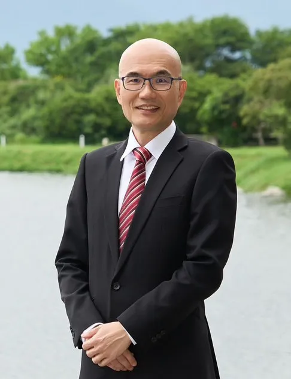
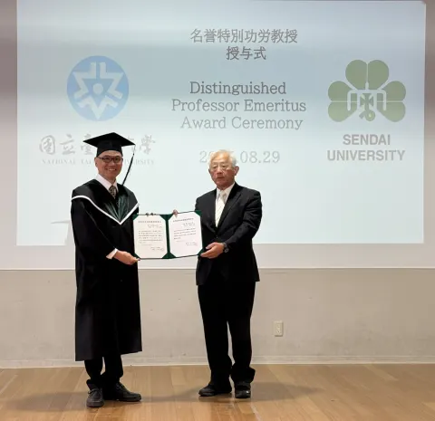

Advisor
Professor

Sheng-Tzong Cheng
Professor · Advisor
- Phone +886-6-275-7575 ext 62520#2607
- Email stevecheng1688@gmail.com
- Lab Ubiquitous Sensing and Cloud Computing Lab
Research Interests
Areas of Expertise
Information & Network Security
Artificial Intelligence
Quantum Computation
Wireless Communication
Mobile Computation
E-life Digital Technology
Computer Network
Machine Learning
Education
Education
- 1995 · Ph.D., Computer Science
University of Maryland, College Park, U.S.A. - 1987 · M.S., Electrical Engineering
National Taiwan University, R.O.C. - 1985 · B.S., Electrical Engineering
National Taiwan University, R.O.C.
Experience
Experience
- 2026.5.1 ─ 2027.4.30: Research Consultant, “2026 Home-Based Medical Care Information Platform Planning and Professional Technical Services Project” (commissioned research), Nomura Research Institute Taiwan Co., Ltd.
- 2026.3.19 ─ 2027.1.18: Project Advisor, “Resilience Assessment and Strategy Research on Heterogeneous Backup for Communication Networks” (commissioned research), Nomura Research Institute Taiwan Co., Ltd.
- 2025.9.3 ─ 2026.12.31: Review Committee Member, “AI+ Industrial Smart Co-Creation Demonstration Program,” National Development Council
- 2024.2.1 ─ Present: President, National Taitung University
- 2024.1.1 ─ 2024.12.31: Reviewer (ICT Field), 2024 Small Business Innovation Research (SBIR) Program, Small and Medium Enterprise and Startup Administration, Ministry of Economic Affairs
- 2023.9.1 ─ 2024.12.31: Chief 5G Communication Technology Advisor, “5G Smart Transportation Information Security and Development Strategy Analysis,” under the “5G-Driven Smart Transportation Technology and Service Innovation Promotion and Management Program (Phase II),” Ministry of Transportation and Communications
- 2023.5.1 ─ Present: Member, Technical Review Panel, Defense Advanced Science and Technology Research
- 2023.3.1 ─ Present: Review Committee Member, DIGITAL+ Digital Innovation Grant Platform, Administration for Digital Industries, Ministry of Digital Affairs
- 2022.8.1 ─ Present: Chair Professor, Chaoyang University of Technology (CYUT)
- 2022.6 ─ Present: Guest Editor: Special Issue, Mathematics (MDPI)
- 2022.6 ─ Present: Guest Editor: “Advanced Information Science and Distributed Systems,” Applied Sciences (MDPI)
- 2022.1.1 ─ Present: Chief Reviewer, Technology Development Programs for Research Institutes and Academia, Department of Industrial Technology, Ministry of Economic Affairs
- 2022.1.1 ─ Present: Chief Reviewer, SBIR Program, Small and Medium Enterprise Administration, Ministry of Economic Affairs
- 2022 ─ 2023: Committee Member (ICT Field), 8th National Industrial Innovation Award, Ministry of Economic Affairs
- 2022.1.1 ─ 2022.7.31: Honorary Chair Professor, Chaoyang University of Technology (CYUT)
- 2021.8.1 ─ Present: Expert Representative, Science & Technology Policy Research and Information Center, National Applied Research Laboratories
- 2021.8.1 ─ Present: Advisory Expert, AI Industry-Academia-Research Alliance, National Applied Research Laboratories
- 2021 ─ 2024: Member, Education Committee, Board of Directors, Chinese Institute of Engineers
- 2021 ─ 2022: Associate Editor: International Journal of Electrical Engineering (IJEE)
- 2021: Selection Committee Member, Dean of the College of Health Technology, National Taipei University of Nursing and Health Sciences
- 2019.1.1 ─ 2021.12.31: Convener, Computer Science Program, Department of Engineering and Technologies, Ministry of Science and Technology
- 2011: Guest Editor: Science Report, National Science Council
- 2009 ─ 2012: Vice Chair: IEEE Communications Society (ComSoc), Tainan Sector
- 2005 ─ 2008: Planning Committee Member, Innovation and Foresight Technology Planning Committee, Institute for Information Industry
- 2004.8.1 ─ Present: Professor, Dept. of Computer Science and Information Engineering, National Cheng Kung University
- 2004 ─ 2008: Advisory Committee Member, Free Software R&D Promotion Project, National Science Council
- 2009.8.1 ─ 2012.7.31: Chair, Dept. of Computer Science and Information Engineering, National Cheng Kung University
- 2007.8.1 ─ 2008.7.31: Visiting Scholar, Dept. of Electrical and Computer Engineering, University of Washington, Seattle (Top 10 in the U.S.)
- 2004 ─ 2008: Member, Industry-Academia-Research Collaboration Committee, Institute for Information Industry
- 1999.8.1 ─ 2004.7.31: Associate Professor, Dept. of Computer Science and Information Engineering, National Cheng Kung University
- 1997.8.1 ─ 1999.7.31: Assistant Professor, Dept. of Computer Science and Information Engineering, National Cheng Kung University
- 1996.8.1 ─ 1997.7.31: Associate Professor, Dept. of Computer Science and Information Engineering, National Dong Hwa University
- 1995.8.1 ─ 1996.7.31: Assistant Professor, Dept. of Computer Science and Information Engineering, National Dong Hwa University
Honors & Awards
Honors
- 2026: 17th Distinguished Alumni Achievement Award (Academic & Education Category), National Tainan First Senior High School
- 2026: Recognized by National Cheng Kung University for 30 years of dedicated service in education
- International conference best paper awards, including the Best Conference Paper Award at the 2026 IEEE International Conference on Knowledge Innovation and Invention (ICKII 2026), the Best Conference Paper Award at the 2026 IEEE Eurasian Conference on Educational Innovation (ECEI 2026), the Best Presentation Award at the 2025 IEEE 13th International Conference on Smart Energy Grid Engineering (SEGE 2025), the Best Conference Paper Award at the 2025 IEEE Eurasian Conference on Educational Innovation (ECEI 2025), the Best Paper Award at the 7th EAI International Conference on Smart Grid and Internet of Things (EAI SGIoT 2023), and the Best Paper Award at the 2020 International Computer Symposium (ICS 2020)
- August 2025: Awarded the title of Honorary Distinguished Merit Professor

, Sendai University, Japan - 2019 ─ 2025: Named to the World’s Top 2% Scientists list (Career-Long Scientific Impact) published by Stanford University for seven consecutive years
- 2024: Supervised master’s students in the “AI CUP 2024 Power Generation Forecasting Based on Regional Microclimate Data Competition” — Honorable Mention
- 2024: Supervised undergraduate students in the “NCKU CSIE Class of 2025 Undergraduate Capstone Project Exhibition” — Third Place
- 2024: Supervised master’s students in the “TSMC CareerHack (Campus Hackathon)” — First Place, Facility Knowledge Chatbot Track
- 2023: Supervised master’s students in the “Chuang-Chuang AIoT 2023 Competition” — Second Place, Sustainable Technology Track
- 2022: Supervised graduate course students in the “AI CUP National University AI Competition” — Top-Tier Ranking
- 2020: Excellence in Teaching Award, National Cheng Kung University, Academic Year 2019–2020
- 2018: “Outstanding Project” Award, jointly presented by the Ministry of National Defense and the Ministry of Science and Technology
- 2006: Lam Research Thesis Award — Information and Communication Technology
- 2006: Supervised students in the National University Embedded Software Design Contest — Merit Award, Software/Hardware Integration Category, Ministry of Education
- 2005: Senior Excellent Teacher Award, National Cheng Kung University, Academic Year 2005–2006
- 2004: Supervised students in the ITRI Computer & Communications Research Laboratories “Wireless Mobile Dreamer 2004 Communication Contest” — Honorable Mention and Finalist, and Intel Innovation Research Award
- 2004: Supervised the student project in “Discover Taiwan Wireless Stars 2004” — ITRI “Most Popular Champion Award” and Intel Innovation Research Award
- 2004: Supervised students in the Institute for Information Industry “Creative Life Technology Application Scenario Contest” — Bronze Award (Scenario)
- 2002: K. T. Li Research Award, National Cheng Kung University
- 2001: Supervised students in the Ministry of Education College Communication Technology Project Contest — Merit Award, University Division
- 1999: Acer Foundation Long-Teng Thesis Award